"THE GATE"
2108 /// Dredgen Capital · 005579

“The Gates”, formally known as Food Bank Podiums,
stood between citizens of The Grave and their next meal.
Citizens would line up by the hundreds every day at these
podiums and wait to be granted entry into the Food Bank.
These were large cuboid-shaped buildings that provided citizens
with consistent meals amid the uncertainty of the environment.
In reality, Food Banks would often run out of food before a
fraction of people could be served. At this point, entrances
would be sealed, podiums would flash red, and K-4 Units would
be swiftly deployed.
RUN SIMULATION
77 · 8342562 · 071702 · 101916 · 44